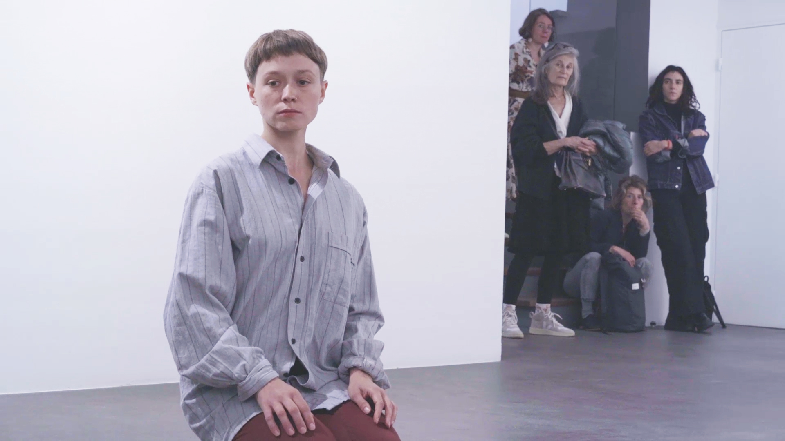
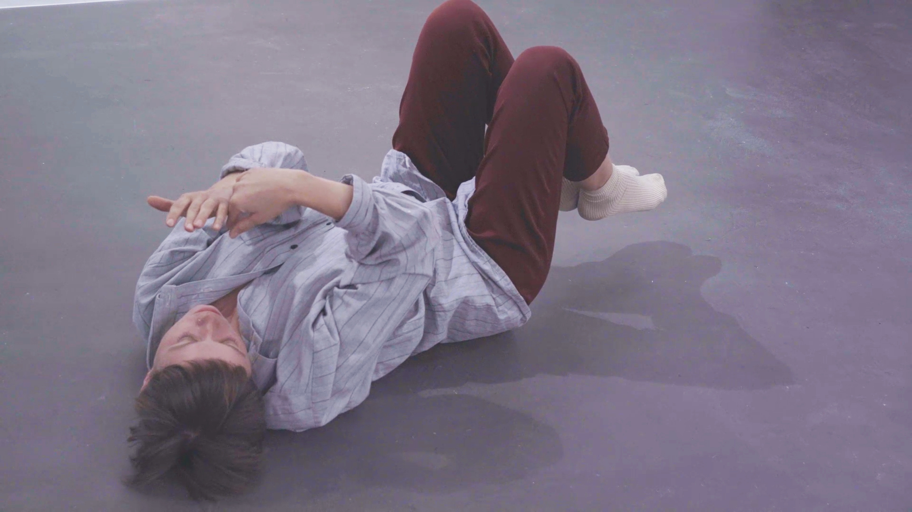
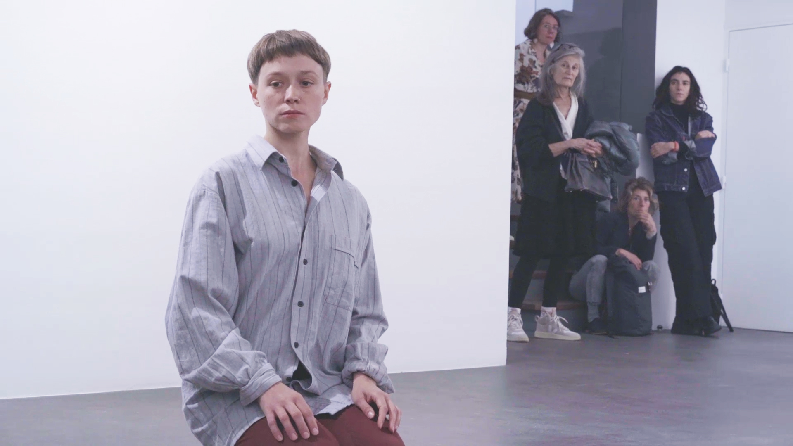
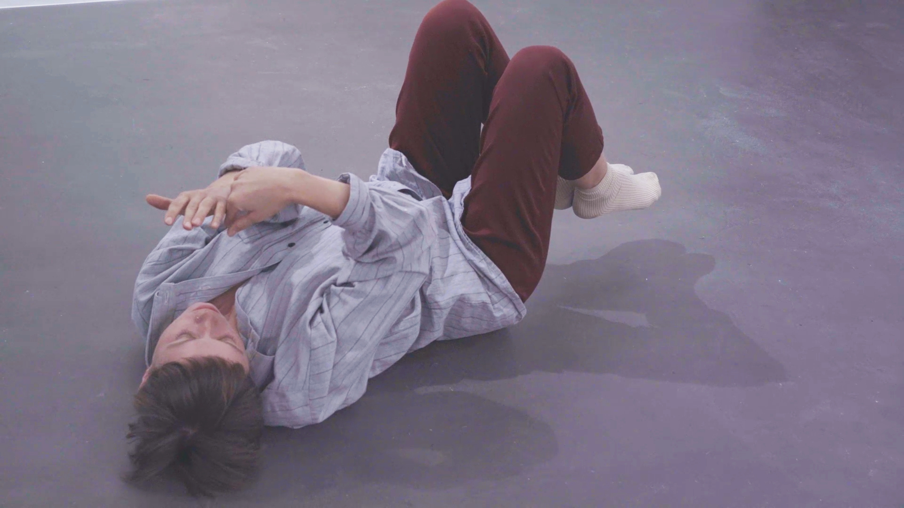

Traversant les pièces de Brodsky
performance, 20 minutes, 2021
Dans cette performance je m’inspire des descriptions de certains espaces de poèmes de Joseph Brodsky. Les déplacements, le regard posé et la traduction libre en russe et en français composent cette performance solo. Plusieurs poèmes rassemblés en un seul et même “voyage” de mon corps dans l’espace de la performance, pensé comme un montage cinématographique, une séquence. Chaque poème est réduit à quelques phrases, voir à quelques mots.
___
Journal du bord :
La première fois que j’ai performé cette pièce devant un petit groupe, une amie m’a conseillé de compter dans ma tête pour apprendre à prendre le temps. Alors j’ai compté. Je me disais qu’à ce moment de ma vie, il m’était plus simple d’aller vite — plus difficile, mais possible — d’aller au ralenti. Performer au rythme du temps astronomique restait pourtant un véritable défi pour moi.
 


